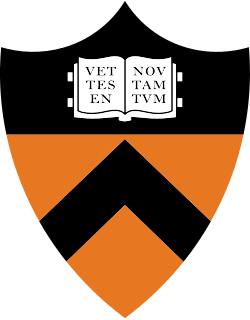
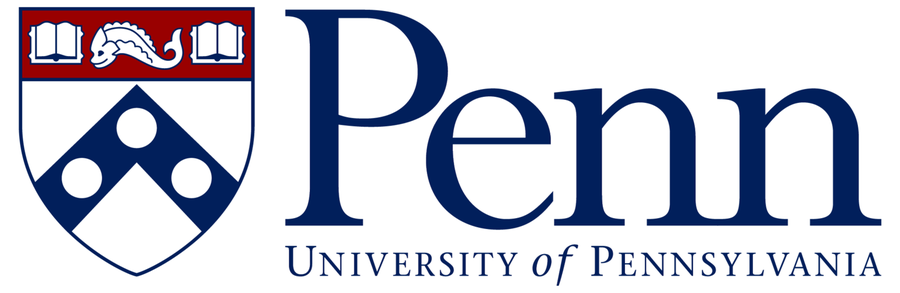
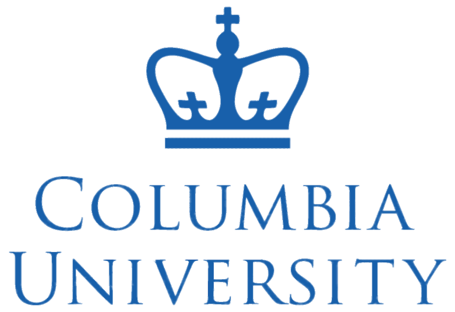
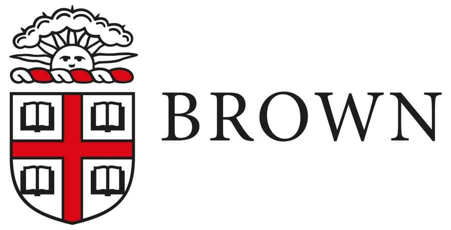
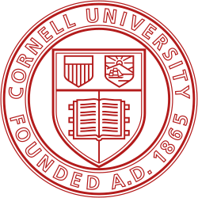
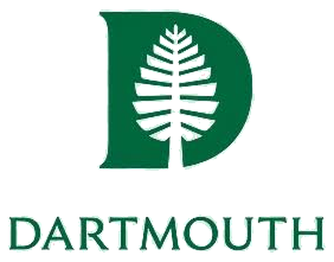
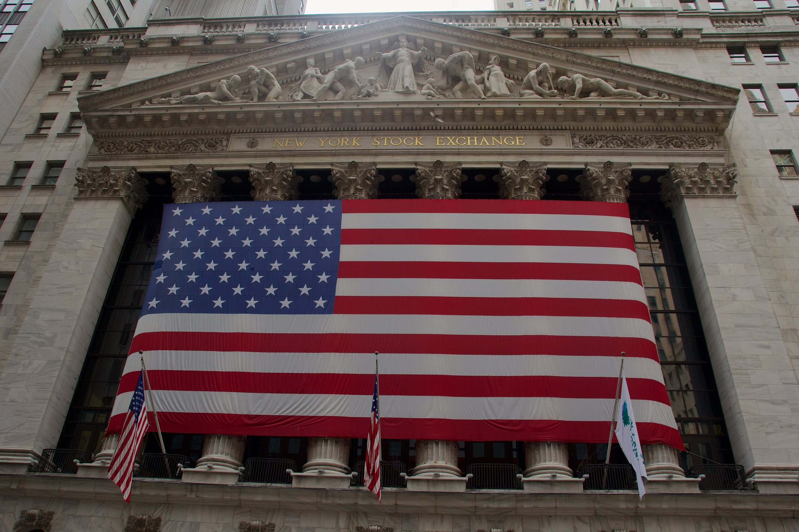

The Bastion Investment Society is a research and investment organization focused on equities, credit, and quantitative strategies. The team is a partnership between undergraduates at Harvard, Yale, Princeton, UPenn, Columbia, Brown, Cornell, and Dartmouth.
Bastion Investment Society is the Ivy League's independent student investment society: a collection of students, mentors, and partners across all eight Ivy League schools. We are not affiliated with any of the schools. We bring in industry leaders and alumni to share their investment philosophy with like-minded young professionals. The organization manages a $75K student-run fund.








Bastion Investment Society is an independent organization of students, mentors, and partners. It is not affiliated with, sponsored by, or endorsed by any of the institutions shown above. Institution names and logos are the property of their respective owners and are displayed solely to identify the schools our members attend.
